Opus 4.8 grabbed the headlines, but Workflows may be the more important drop. A 16-minute walkthrough, distilled: the mental model, the live demos, the token reality, and exactly when to reach for one.
Watch on YouTubeworkflow.js script becomes the manager. State lives in variables, loops are deterministic, only final answers return to chat.Workflows officially shipped alongside Opus 4.8 — and the creator's take is that Workflows, not the new model, are the most valuable part of the announcement. The whole feature rests on one prerequisite concept: the sub-agent. So the video starts there.
A normal Claude Code session accumulates everything — tool calls, MCP responses, long reasoning, file reads — until the context window is bloated. Even a 1M ceiling fills with junk, and compaction is lossy by design: earlier detail gets summarized, not recovered.
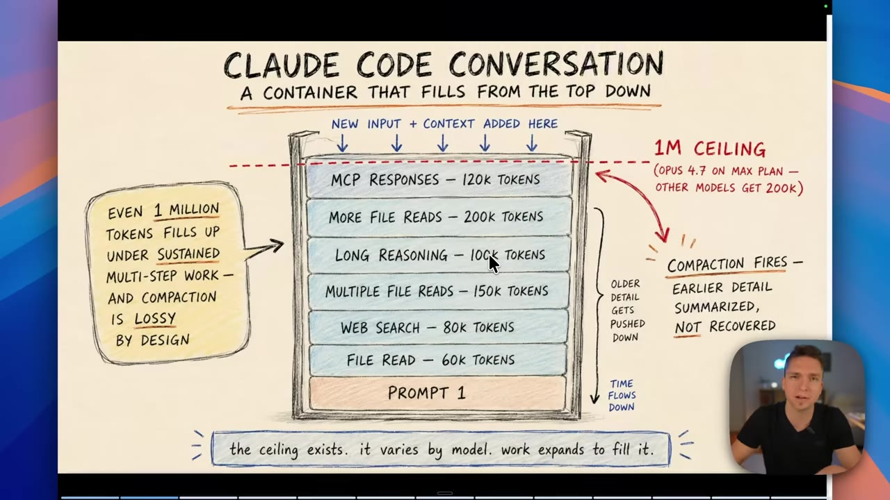
Sub-agents are the existing fix: spawn a fresh Claude Code session with its own isolated context to do one task, and return only the answer. A 60,000-token job done in a sub-agent returns ~500 tokens to your main session — no bloat, no compaction.
Sub-agents alone don't solve everything. When Claude itself is the orchestrator, it has to hold intermediate state, make routing decisions turn by turn, and track every agent — which breaks down at scale. The Workflow's insight: move the manager into a script.
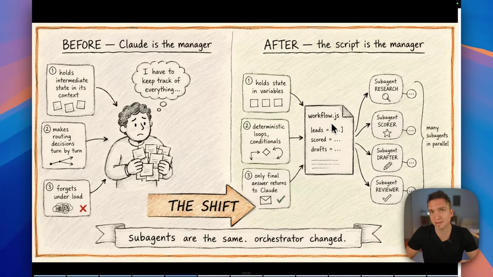
"We no longer have this overburdened main context window. We have a workflow.js script that holds the state inside variables. It has deterministic loops, and only the final answers return to our main context."
— Mansel Scheffel
At runtime, workflow.js runs as a separate process that loads the JavaScript, spawns sub-agents, and tracks everything in a journal — which is what makes pause/resume work (completed agents return cached results).
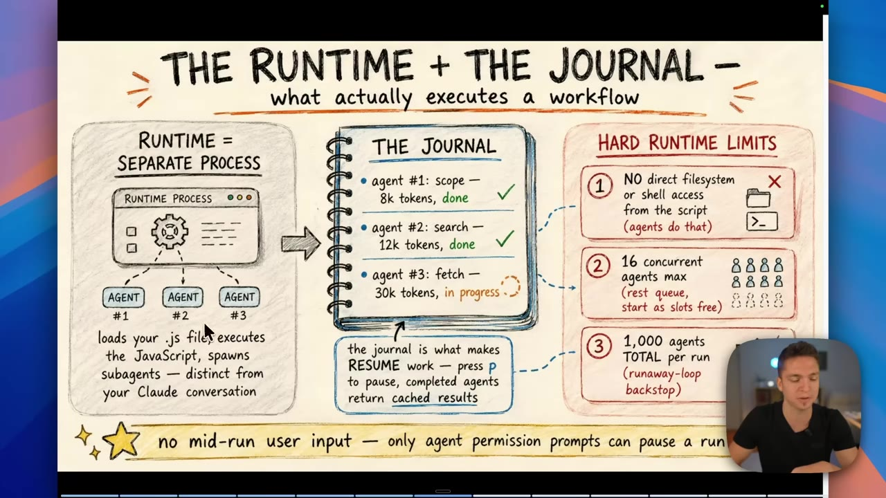
The script can't touch the filesystem or shell directly — the agents do that.
The rest queue and start as slots free up.
A runaway-loop backstop. You can still field a massive swarm.
The built-in deep-research skill is a Workflow. Asked to research the benefits of vitamin C, it runs five phases:
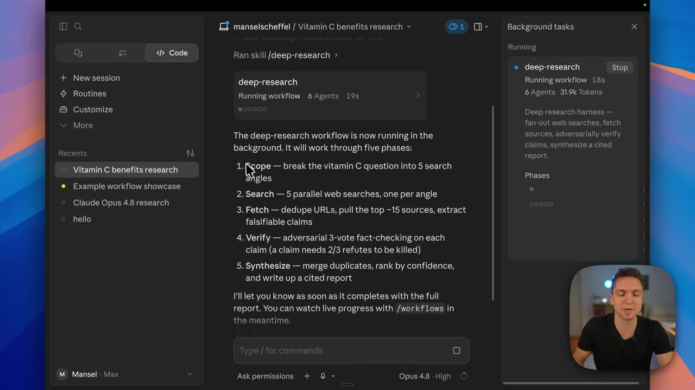
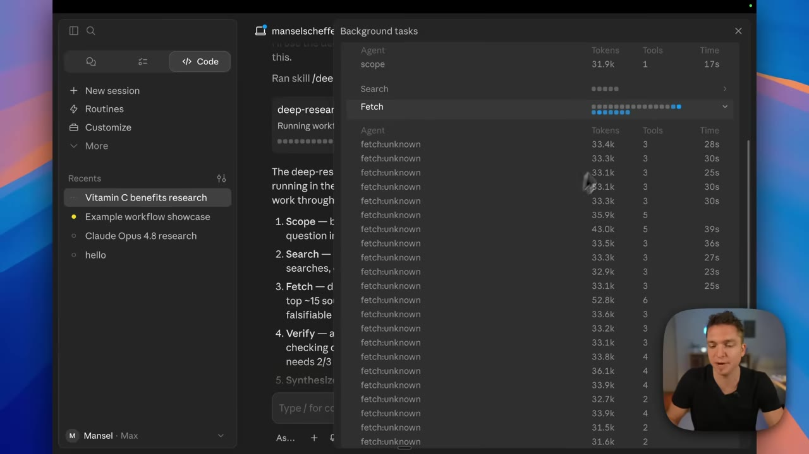
The numbers are the headline. One minute in: 27 agents, 682k tokens. By the end: 105 agents, 3 million tokens, 15 minutes — for a vitamin C summary.
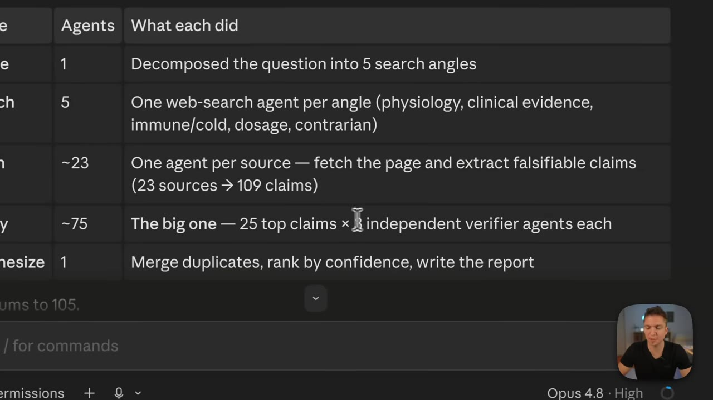
"Just because we've isolated this to separate sub-agents doesn't mean we're magically going to get perfect usage. We are still using this much." — Mansel Scheffel
Asked to show off, Claude built a "startup forge" Workflow that maps cleanly onto the reusable orchestration primitives:
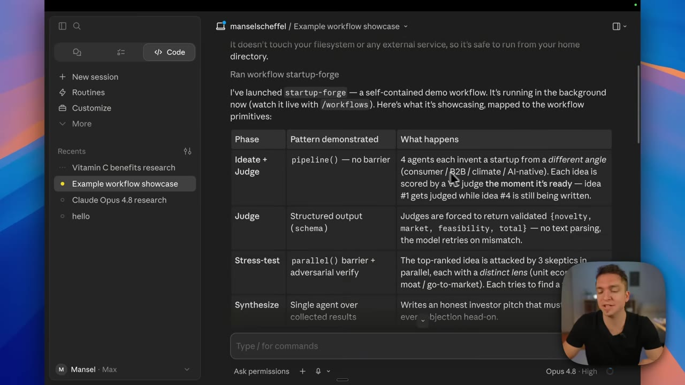
pipeline() with no barrier, schema-validated judges, parallel() adversarial stress-test, single-agent synthesis.06:48Ideas get judged the moment each is generated — no barrier waiting for all four.
Judges return validated schema (novelty, market, feasibility) — zero text parsing.
The top idea is attacked by 3 skeptics, each with a distinct lens, hunting for a fatal flaw.
One agent writes an honest investor pitch that must confront every objection.
Other fits the creator names: code reviews, PR trawling, audits, lead-gen fan-out (replacing brittle skill-chaining), and codebase-wide bug sweeps.
You don't have to run everything on Opus. The model is set per agent() call — and you can tier them by task difficulty. The "brand foundry" demo does exactly this:
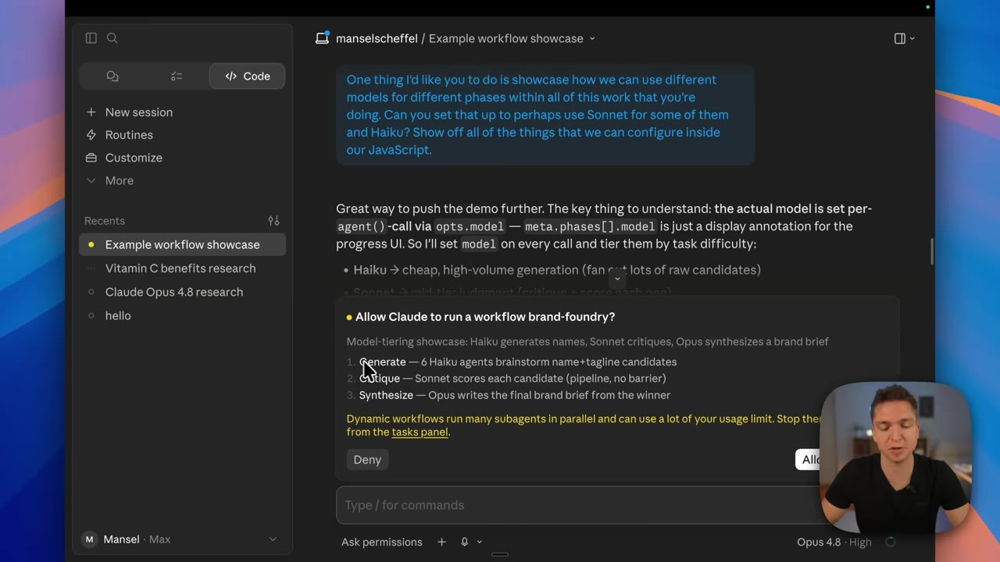
"The more clarity that we provide the system up front, the better the output down the line. Come to it with a very specific request." — Mansel Scheffel
You're not handing over the keys blindly. There are three levels of intervention, from loosest to tightest:
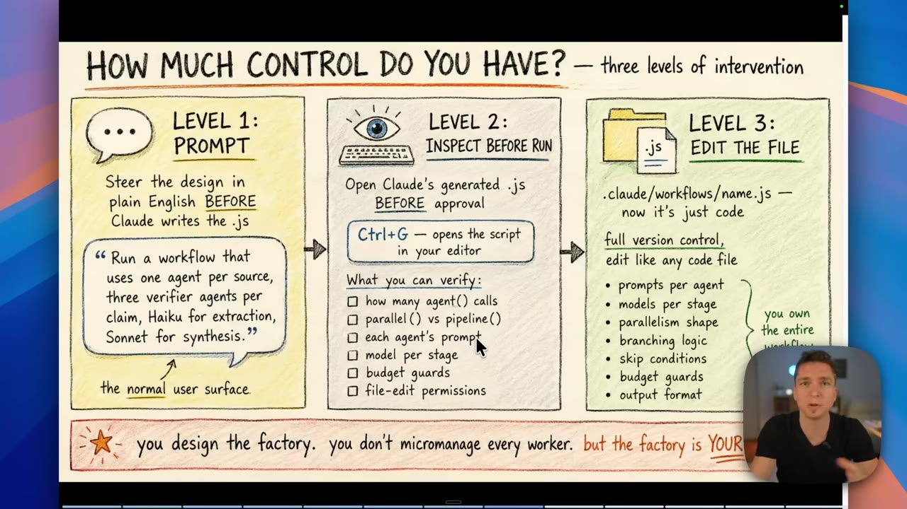
.js before approving (Ctrl+G). Level 3: edit the file like any code.13:50By default a Workflow runs with edit-accept permissions — it won't bypass permissions unless you tell it to. And there are four ways to trigger one, three ways to switch it off.
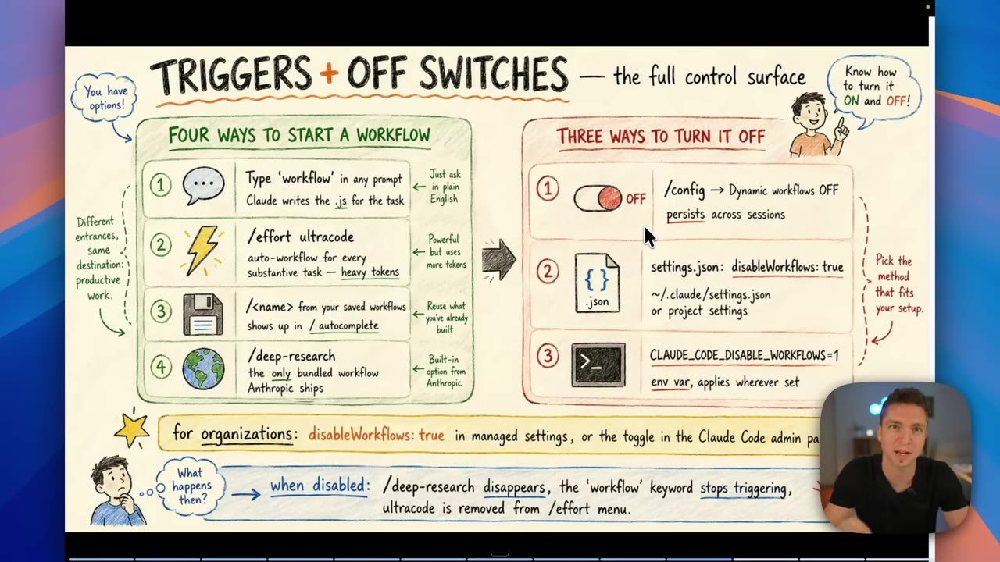
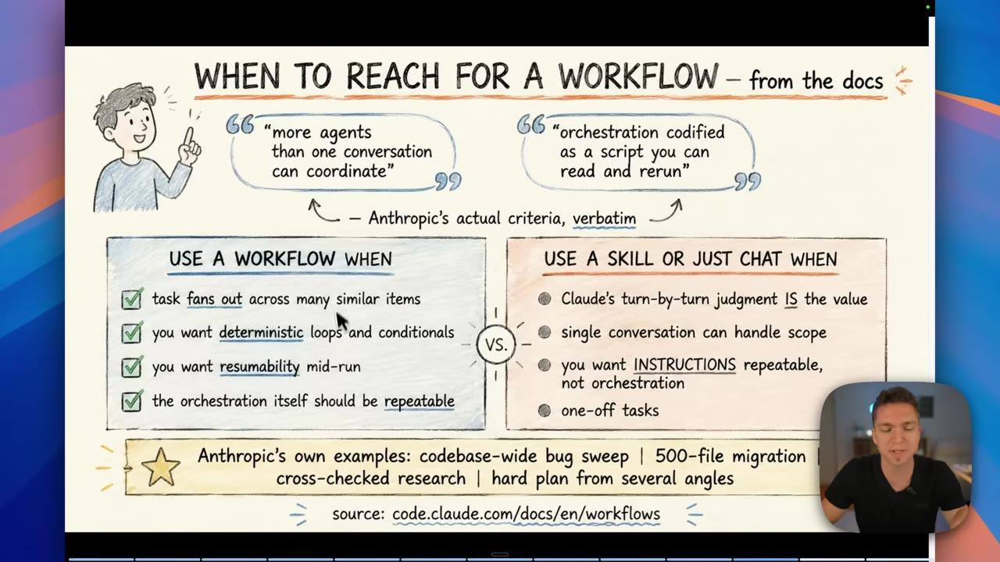
Work fans out across many similar items · you want deterministic loops · you need resumability mid-run · the orchestration itself should be repeatable.
Claude's turn-by-turn judgment is the value · a single conversation handles the scope · you want repeatable instructions, not orchestration · one-off tasks.
The creator's bottom line: skills for the daily, repeatable business work; Workflows for the specific, fan-out-heavy jobs — bug sweeps, large migrations, cross-checked research. Just remember it's still in research preview, and the token bill is real.